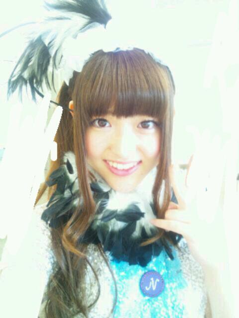
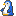
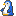

2012/0922Satうぎゃーっ(o・・o)
おつかれさまつむらっ(o・・o)
さゆりんごっっ(o・・o)
全国握手会＠ポートメッセ名古屋で
ございましたー＼(^^)／
沢山のかたに来ていただき
ほんまに嬉しかったです！
ミニライブで
ステージに出たら
沢山のかたがいて
びっくりしました！
アメイジング！
自己紹介は噛んでしまったよー(´；ω；`)
なんかね〜ライブとか久し振りやから
めっちゃ緊張してん！笑
でも楽しかったー＼(^^)／
見てくれた皆さんありがとう(*^^*)
またライブやりたいね！
握手会も楽しかったよー＼(^^)／
始めましてのかたが
多かったね☆
まあやとれなりん推しのみなさんも
ありがとうございました♪
今日も変なこと言ってたら
すみませんー。笑
みなさんほんまに優しくて面白くて
松村も凄く楽しかったよー＼(^^)／
ギアスをわかってくれはるかたがいて
良かったです///
唐揚げにのってくれた方も
ありがとう(*^^*)
明日は大阪で
個別握手会です！
地元！
また楽しみにしてます♪
お待ちしてますね〜(*^^*)ノ
そんで！
横の会場で全国握手会を
されてたＳＫＥ４８さんのとこに
御挨拶にいったのですが、
ついにー
松村香織さんにお会いしてしまいました！
沙友理のほうの松村が
会いたいとわがままを言ったら
会えてしまいましたー(´；ω；`)
なんてことやー／(^^)＼
凄くかわいくて明るくて
素敵な方でした(>_<)
いつか一緒にお仕事とか
できたらいいなー(*´ー｀*)てへ
名古屋お邪魔しましたー＼(^-^)／

ドードー鳥んごっ(o・・o)
明日は何着よかなー(*´ー｀*)
ちなみに
かずみんと同じ部屋やよー＼(^-^)／
寝顔に落書きすんぜっ(￣▽￣)ｂ
おやすみなさゆりんっ(o・・o)/~
2012/09/22 22:54
コメント(446)
握手会お疲れ様です！
明日も頑張ってくださいね！
でわ！
明日も頑張ってくださいね！
でわ！
こんばんは!!
松村対談できたんだ！
良かったね♪
かずみんの寝顔落書き楽しみにしてます♪
松村対談できたんだ！
良かったね♪
かずみんの寝顔落書き楽しみにしてます♪
さゆりんごと握手すっごい楽しそうだなあって思うーん((´^ω^))
早く行ってみたいなあ(´Д⊂ヽ
おやすみなさゆりんご(´_ゝ｀)☆←
早く行ってみたいなあ(´Д⊂ヽ
おやすみなさゆりんご(´_ゝ｀)☆←
お疲れ様
さゆりんごっっ(o ･ ･ o)
ねこりんごっっ(o ･o･ o)
今、前回のブログにコメしたよ☆
読んでね(^-^)
明日、大阪もがんばりんご♪♪♪
またね！ ひで♬
さゆりんごっっ(o ･ ･ o)
ねこりんごっっ(o ･o･ o)
今、前回のブログにコメしたよ☆
読んでね(^-^)
明日、大阪もがんばりんご♪♪♪
またね！ ひで♬
どうも～
握手会お疲れさまでした～
大阪個別もがんばって～
握手会行けないので
コードギアスを最終話まで観たよ～
確かに最終話良かったよ～
でも、最後オレンジがオレンジ収穫してたｗ
握手会お疲れさまでした～
大阪個別もがんばって～
握手会行けないので
コードギアスを最終話まで観たよ～
確かに最終話良かったよ～
でも、最後オレンジがオレンジ収穫してたｗ
全握おつかれさまでしたー♪明日の大阪ゎ行くんで地元どうしよろしくお願いしますー(*^^*)さゆりん銀魂好きなんですか(・∀・)？まぁ明日また聞きます(￣^￣)ゞ
全握おつかれさま(・∀・)/
楽しめたかな!?
今回もほんと行けなくてショックだよ(泣)
いつになったら握手できるのかな!?
ドードどりんご(笑)
似合いすぎ(≧∀≦)
かずみんと一緒の部屋だとぉΣ(￣。￣ノ)ノ
落書き楽しみにしてry)
でわでわ、明日の個握も楽しんでください（ ´∀｀）
楽しめたかな!?
今回もほんと行けなくてショックだよ(泣)
いつになったら握手できるのかな!?
ドードどりんご(笑)
似合いすぎ(≧∀≦)
かずみんと一緒の部屋だとぉΣ(￣。￣ノ)ノ
落書き楽しみにしてry)
でわでわ、明日の個握も楽しんでください（ ´∀｀）
お疲れ様☆
全握行きたいなー！僕は幕張まで握手会はおあずけです(>_<)
SKEも合流したらしいですね♪明日の個別も頑張ってね♪( ´▽｀)
ドードーさゆりん可愛い\(//∇//)\おやすみなさゆりんっ！
全握行きたいなー！僕は幕張まで握手会はおあずけです(>_<)
SKEも合流したらしいですね♪明日の個別も頑張ってね♪( ´▽｀)
ドードーさゆりん可愛い\(//∇//)\おやすみなさゆりんっ！
今日もお疲れさまです！
楽しそうで何より笑
明日も楽しんでな！
さかちょん
お疲れ様でした！
明日は大阪ですね！
地元だし頑張ってください！
かずみんにイタズラしちゃダメよー（笑）
明日は大阪ですね！
地元だし頑張ってください！
かずみんにイタズラしちゃダメよー（笑）
さゆりんこんばんご~(о・・о)
久しぶりにコメントしたよ~( v^-゜)♪
今日の名古屋全握お疲れ様(*´ω｀*)
それとミニライブ、握手会楽しかったよーー(≧▽≦)
でも今日さゆりんのレーン行かれへんかってんやんかぁ(´；ω；`)
なんでなんよー(´；ω；`)って言わないで(´・ω・`)笑
その変わり大阪個別には行くからね(*^▽^*)♪
さゆりん待っててねー(*^ー^)ノ♪
じゃあ今日はゆっくり休んで明日も楽しもなーー((o(^∇^)o))
ではでは~ヽ(・∀・)ノ
久しぶりにコメントしたよ~( v^-゜)♪
今日の名古屋全握お疲れ様(*´ω｀*)
それとミニライブ、握手会楽しかったよーー(≧▽≦)
でも今日さゆりんのレーン行かれへんかってんやんかぁ(´；ω；`)
なんでなんよー(´；ω；`)って言わないで(´・ω・`)笑
その変わり大阪個別には行くからね(*^▽^*)♪
さゆりん待っててねー(*^ー^)ノ♪
じゃあ今日はゆっくり休んで明日も楽しもなーー((o(^∇^)o))
ではでは~ヽ(・∀・)ノ
さゆりん早く幕張来てよ～～
とりあえず名古屋お疲れ‼
故郷大阪での全握楽しんでね(^^)
早く会えるの楽しみにしてるよ‼
オッツー（≧∨≦）b
もっちゃんです（＾∇＾）
全握お疲れ様でした＼(^o^)／
どんな服を着てたのか気になるなぁ( ´ ▽ ` )
もし、写真あったら載せて下さい（^人^）
ドードー鳥んごっ可愛いよ(#^.^#)
おやすみなさゆりん(^з^)-☆
こんばんごー
個握の私服また載せて欲しいな
明日も楽しむんだぜぜぜぜ～い！
おやすみんご～
個握の私服また載せて欲しいな
明日も楽しむんだぜぜぜぜ～い！
おやすみんご～
かおたんに会ったんだ(￣ー￣)
W松村じゃんね！
アメイジング＼(^o^)／
あ～早くさゆりんに会いたいわぁヽ(；▽；)ノ
松村沙友理、うぉーあいにー♪
W松村じゃんね！
アメイジング＼(^o^)／
あ～早くさゆりんに会いたいわぁヽ(；▽；)ノ
松村沙友理、うぉーあいにー♪
噛んでもええねん！
りんごは噛んで食べるもんや！
違うか？(笑)
明日大阪で待ってるでー！
はよ帰ってきーやー(^^)
りんごは噛んで食べるもんや！
違うか？(笑)
明日大阪で待ってるでー！
はよ帰ってきーやー(^^)
さゆりんこんばんは～＼(^o^)／
握手会お疲れ様でした(*^^*)
自己紹介噛んじゃったんだｗｗ
経験を積み重ねていけば緊張もしなくなると思うよ～
ブログ見てると今日も楽しい握手会だったってのがすごい伝わってくるよ
明日の大阪での握手会も楽しんでね
今日かおたんに会えたんだ～
よかったね
いつか一緒にお仕事できるといいね
ドードー鳥可愛い
さすがさゆりんだね
かずみんと同じ部屋って楽しそうだね
でも寝顔に落書きはやめてあげてねｗｗ
ではでは今日も１日お疲れ様でした
ゆっくり休んでね
おやすみ～(^_^)/
名古屋全握お疲れさま！！
自己紹介で噛んだんだ？笑
でもさゆりんらしくて
逆によかったんじゃない？？
明日は大阪個握楽しんでね！！
さゆりん かわいいいいい >.<
さゆりんおつかれちゃーん！
楽しい握手会になってよかったね♪
初めての人もさゆりんの虜になっただろうね(^ー^)
楽しい握手会になってよかったね♪
初めての人もさゆりんの虜になっただろうね(^ー^)
全国握手会おつかれさまです
あの自己紹介は噛むなんてめずらしいね！
是非噛んでるさゆりん見たかったなあ（笑）
あの自己紹介は噛むなんてめずらしいね！
是非噛んでるさゆりん見たかったなあ（笑）
おはこんにちばんわぁー(=ﾟωﾟ)ﾉ！
今日は名古屋の全握お疲れ様でした！
久しぶりの握手会で楽しかったみたいで何よりです♪( ´▽｀)
コードギアスは観ようとは思ってたんだけど、なかなか観る機会がなかったので今度観てみようと思います☆
おお！！
ついにかおたんと対面しましたか( ´ ▽ ` )ﾉ
W松村、実現しましたね（笑）
また何かの時に共演希望です(((o(*ﾟ▽ﾟ*)o)))笑
では、今日はこの辺で！
10月にさゆりんに会えるの楽しみにしてますo(｀ω´ )o♫
本日携帯を変えてテンション上がってるゆ〜すでした（笑）
ほな、またにぃー♪( ´θ｀)ノ
個握も行けないという生き地獄を味わっています(T-T)
かずみんに落書きしたらブログに載せてください(笑)
明日も頑張ってください(^-^)v
では、お休みなさい(-.-)Zzz・・・・
こんばんは沙友理ちゃん お疲れさまー
香織ちゃんに会えてよかったね、スタッフブログとか見ると
ＳＫＥと影ナレをお互いして楽しそうだね、行きたかったぞ。
今日は地元大阪も楽しそう、またブログＵＰお願いします。
一実ちゃんの寝顔といえば乃木どこを思いだす、落書きした
顔の写メお願いしますよ(^o^)
写メが可愛いぞ、生写真でだして。 では、また
香織ちゃんに会えてよかったね、スタッフブログとか見ると
ＳＫＥと影ナレをお互いして楽しそうだね、行きたかったぞ。
今日は地元大阪も楽しそう、またブログＵＰお願いします。
一実ちゃんの寝顔といえば乃木どこを思いだす、落書きした
顔の写メお願いしますよ(^o^)
写メが可愛いぞ、生写真でだして。 では、また
さゆりん握手会お疲れ様
松村繋がりでSKEの松村ちゃんに会ったんだ
会うことができてよかったね！
明日の大阪もいい握手会にしてね☆
松村繋がりでSKEの松村ちゃんに会ったんだ
会うことができてよかったね！
明日の大阪もいい握手会にしてね☆
おつかれさまつむら…
言いにくい(笑)
どーせ言いにくいなら、
おつかれさまつむらさゆりんごぱんちー(*･ω･)ﾉ
…
疲れたー(ﾟ∀ﾟ)
言いにくすぎて疲れたー(ﾟ∀ﾟ)
この一言で25万ガセル使うぜ(ﾉД`)
明日、何話そ…
リアルに困ってるんで、なんか謎のTシャツ着てるやつ来たら話しかけてください
こっちはもう25万ガセル使ったんで、残りガセルが少ないんですよ(´･ω･`)
なんで、おれのガセル、回復させてください(ﾟ∀ﾟ)
じゃ…
寝る！
に(*･ω･)ﾉ
言いにくい(笑)
どーせ言いにくいなら、
おつかれさまつむらさゆりんごぱんちー(*･ω･)ﾉ
…
疲れたー(ﾟ∀ﾟ)
言いにくすぎて疲れたー(ﾟ∀ﾟ)
この一言で25万ガセル使うぜ(ﾉД`)
明日、何話そ…
リアルに困ってるんで、なんか謎のTシャツ着てるやつ来たら話しかけてください
こっちはもう25万ガセル使ったんで、残りガセルが少ないんですよ(´･ω･`)
なんで、おれのガセル、回復させてください(ﾟ∀ﾟ)
じゃ…
寝る！
に(*･ω･)ﾉ
さゆりん、こんばんご〜(=^･ω･)ﾉ
名古屋での握手会&ミニライブ、お疲れさまつむら〜.:*ﾟ･;*:ヽ(*´∀`*)ﾉ.:*ﾟ･;*:
お疲れさまつむら、めっちゃいいやすいね！！(笑)Σd(ﾟ∀ﾟd)
これからも使いまつむら〜.....
うん！？なんか違う！？(笑)(￣▽￣;)
とにかく、とにかく、さゆりん今日はお疲れ〜！！！
来る人も段々多くなってるみたいだね！！
でも、そんな中俺は今回も握手会に行けてないという....｡｡(〃_ _)σ∥
乃木坂は、上り坂でどんどん上に行ってるのに、俺は、全然ついていけてないんよ.....
いっつも、握手会がある度こんな感じで考えちゃうんだよね...こんなんでいいのかなって
でも、そんな時に、さゆりんのブログ読むと本当に、気持ちが和らぐんよ！！
さゆりん、今日も頑張ってたんだって、俺も落ち込んでないで、頑張らなきゃってなるんよ！！
だから、これからは、もっとポジティブに行くねヾ(≧∇≦*)/
あんまり、握手会とか行けないけど、さゆりんのことが大好きな気持ちは、本当に誰にも負けない自身あるから！！(///△///)
自分で言って、ちょっと恥ずかしいけど、いつも面白くて、優しいさゆりんのこと大好き〜｡+ﾟヾ(oﾟ∀ﾟo)ﾉ｡+ﾟ
いつも、笑顔と元気をくれて本当に感謝してもしきれないよ〜、さゆりんありがとう！！！
じゃあ、さゆりん明日も大阪での個別握手会頑張ってね！！☆(ﾟωﾟ☆)(☆ﾟωﾟ)☆ｶﾞﾝﾊﾞ♪
行けないけど、さゆりんのことずっと応援してるよ〜！！
なんか、自分の色んな思いを書いて長くなっちゃったけど、ごめんね....
でも読んでくれたら嬉しいな♪(о￣∇￣)/
最後に、SKEの松村さんに会えてよかったね！！！
やったね〜！！((((oﾟ▽ﾟ)o)))
安定のかずみんの寝顔〜Σd(ﾟ∀ﾟd)
アメイジング！！！＼(〃ﾟ∀ﾟ〃)/
おやすみなさゆりん！！
名古屋での握手会&ミニライブ、お疲れさまつむら〜.:*ﾟ･;*:ヽ(*´∀`*)ﾉ.:*ﾟ･;*:
お疲れさまつむら、めっちゃいいやすいね！！(笑)Σd(ﾟ∀ﾟd)
これからも使いまつむら〜.....
うん！？なんか違う！？(笑)(￣▽￣;)
とにかく、とにかく、さゆりん今日はお疲れ〜！！！
来る人も段々多くなってるみたいだね！！
でも、そんな中俺は今回も握手会に行けてないという....｡｡(〃_ _)σ∥
乃木坂は、上り坂でどんどん上に行ってるのに、俺は、全然ついていけてないんよ.....
いっつも、握手会がある度こんな感じで考えちゃうんだよね...こんなんでいいのかなって
でも、そんな時に、さゆりんのブログ読むと本当に、気持ちが和らぐんよ！！
さゆりん、今日も頑張ってたんだって、俺も落ち込んでないで、頑張らなきゃってなるんよ！！
だから、これからは、もっとポジティブに行くねヾ(≧∇≦*)/
あんまり、握手会とか行けないけど、さゆりんのことが大好きな気持ちは、本当に誰にも負けない自身あるから！！(///△///)
自分で言って、ちょっと恥ずかしいけど、いつも面白くて、優しいさゆりんのこと大好き〜｡+ﾟヾ(oﾟ∀ﾟo)ﾉ｡+ﾟ
いつも、笑顔と元気をくれて本当に感謝してもしきれないよ〜、さゆりんありがとう！！！
じゃあ、さゆりん明日も大阪での個別握手会頑張ってね！！☆(ﾟωﾟ☆)(☆ﾟωﾟ)☆ｶﾞﾝﾊﾞ♪
行けないけど、さゆりんのことずっと応援してるよ〜！！
なんか、自分の色んな思いを書いて長くなっちゃったけど、ごめんね....
でも読んでくれたら嬉しいな♪(о￣∇￣)/
最後に、SKEの松村さんに会えてよかったね！！！
やったね〜！！((((oﾟ▽ﾟ)o)))
安定のかずみんの寝顔〜Σd(ﾟ∀ﾟd)
アメイジング！！！＼(〃ﾟ∀ﾟ〃)/
おやすみなさゆりん！！
BBQ松村にあったんですね～１コメダ！
明日はギアストーーク全力でしましょうね
明日はギアストーーク全力でしましょうね
さゆりんごこんばんご(*^^*)
またまた更新ありがとー♪♪
嬉しいわーヽ(￣▽￣)ノ
握手&ライブお疲れさまつむらー(￣ー￣)
あー
ほんとに行きたかったわー(ToT)
明日の大坂個別も行けないからなー(ToT)
さゆりんしっかり楽しんで来てね！！
んでもって、今日はゆっくり休まなきゃね♪♪
会えたんだー良かったね(*^^*)
ってか、影ナレしに来たんだってね！！
すごいね(*^^*)
ってか、ダブル松村だね( ￣ー￣)ノ笑
落書き賛成ーヽ(￣▽￣)ノ笑
ドードー鳥んごの写メ待ち受けにします(*^^*)笑
今日も１日お疲れ様♪ヽ(´▽｀)/
体調には気をつけてね(ToT)
おやすみなさゆりん(*^^*)♪♪
またまた更新ありがとー♪♪
嬉しいわーヽ(￣▽￣)ノ
握手&ライブお疲れさまつむらー(￣ー￣)
あー
ほんとに行きたかったわー(ToT)
明日の大坂個別も行けないからなー(ToT)
さゆりんしっかり楽しんで来てね！！
んでもって、今日はゆっくり休まなきゃね♪♪
会えたんだー良かったね(*^^*)
ってか、影ナレしに来たんだってね！！
すごいね(*^^*)
ってか、ダブル松村だね( ￣ー￣)ノ笑
落書き賛成ーヽ(￣▽￣)ノ笑
ドードー鳥んごの写メ待ち受けにします(*^^*)笑
今日も１日お疲れ様♪ヽ(´▽｀)/
体調には気をつけてね(ToT)
おやすみなさゆりん(*^^*)♪♪
お疲れれれのれo(^▽^)o
俺も握手会行きたいーーーっ！
でも金が無い…
あと松村香織って誰ですか？（笑）
ていうか寝よ
バイバイ( ´ ▽ ` )ﾉ
俺も握手会行きたいーーーっ！
でも金が無い…
あと松村香織って誰ですか？（笑）
ていうか寝よ
バイバイ( ´ ▽ ` )ﾉ
さゆりんごー
握手会とても楽しかったYO！
さゆりん可愛すぎですわ～
明日も楽しんできてくださいな(^O^)
握手会とても楽しかったYO！
さゆりん可愛すぎですわ～
明日も楽しんできてくださいな(^O^)
久しぶりにコメントしまーりんご。
ちなみに男でーす、リンゴ要素はありません
最近タイムラグでコメントしずらかったー((>_<)ヽ
唐揚げ僕も大好きでーす
コードギアスはまだみたことないので、今度ちぇっくしときます
今年受験なので、握手券あるけど塾とかぶっていけまてん最悪やー
でも、さゆリンゴは遠くから応援してまーす
最後に質問漫画好きのさゆリンゴは、好きな決めぜりふはありますか？
ちなみに男でーす、リンゴ要素はありません
最近タイムラグでコメントしずらかったー((>_<)ヽ
唐揚げ僕も大好きでーす
コードギアスはまだみたことないので、今度ちぇっくしときます
今年受験なので、握手券あるけど塾とかぶっていけまてん最悪やー
でも、さゆリンゴは遠くから応援してまーす
最後に質問漫画好きのさゆリンゴは、好きな決めぜりふはありますか？
今日の握手会 ありがとぉ～でしたぁ～
ありがとぉ～でしたぁ～
４歳の リハク君・・・ 生まれて初めて
生まれて初めて の 握手会だったよょょょょ～ぉ
の 握手会だったよょょょょ～ぉ
リハクは・・・
緑のTシャツ 着とった子だよぉ～
りんごちゃん の 手作りうちわ 持っとった子だよぉ～
の 手作りうちわ 持っとった子だよぉ～
りんごちゃんに、ほっぺた ぐにゅ って、されとっただよぉ～
って、されとっただよぉ～
そんで、りんごちゃんに、「いじめてます 」って言われただよぉ～
」って言われただよぉ～
アリスちゃんの 弟だよぉ～
・・・りんごちゃん 覚えとる
リハクは ４歳にして、りんごちゃん推しじゃんねっ
幼稚園の まり先生と、りんごちゃんが 好き じゃんねっ
じゃんねっ
リハク（涼波空）くん・・・覚えといてね～っ
りんごちゃん 優しかったよょょょ～ぉ
リハク 喜んどったよょょょょ～ぉ
ありがとぉ～
りんごちゃんが、大阪弁だもんで、私までなまったぁ・・・
三河弁・・・ らりんちゃんと、同じ方言・・・だらっ
４歳の リハク君・・・
緑のTシャツ 着とった子だよぉ～
りんごちゃん
りんごちゃん
そんで、りんごちゃんに、「いじめてます
アリスちゃんの 弟だよぉ～
・・・りんごちゃん
リハクは ４歳にして、りんごちゃん推しじゃんねっ
幼稚園の まり先生と、りんごちゃん
リハク（涼波空）くん・・・覚えといてね～っ
りんごちゃん
リハク
ありがとぉ～
りんごちゃんが、大阪弁だもんで、私までなまったぁ・・・
三河弁・・・
唐揚げたくさん集まったかな？(笑)
Ｗ松村実現しましたか
玲奈ちゃんとは話せたのかな
波長合いそうだけど
かずみんに鼻毛書いてあげてね(笑)
Ｗ松村実現しましたか
玲奈ちゃんとは話せたのかな
波長合いそうだけど
かずみんに鼻毛書いてあげてね(笑)
お疲れさん( ´ ▽ ` )ﾉ
今回意外にブログアップ早かったから
少し驚いた（←失礼！）
嬉しいけどな♪( ´▽｀)
しかし、なんと栄の松村とな((((；ﾟДﾟ)))))))
アメイジング‼
今回意外にブログアップ早かったから
少し驚いた（←失礼！）
嬉しいけどな♪( ´▽｀)
しかし、なんと栄の松村とな((((；ﾟДﾟ)))))))
アメイジング‼
名古屋握手会おつかれさまです
さゆりんの笑顔で今日もまた多くの人が
心を奪われちゃったかな＼(^^)／
明日の地元個別握手会
またまた弾けてきてね!!
さゆりんの笑顔で今日もまた多くの人が
心を奪われちゃったかな＼(^^)／
明日の地元個別握手会
またまた弾けてきてね!!
沙友理☆更新ありがとう！お疲れ様！
握手会もライブも楽しめて良かったねぇ〜！俺も早く行きたいよ〜☆幕張まで待ち遠しい！
寝顔に落書きって（笑）見てみたい（笑）
大阪も頑張って、楽しんでね！
そんじゃ、またねぇ☆
今日も沙友理が、笑顔でありますように！！
握手会もライブも楽しめて良かったねぇ〜！俺も早く行きたいよ〜☆幕張まで待ち遠しい！
寝顔に落書きって（笑）見てみたい（笑）
大阪も頑張って、楽しんでね！
そんじゃ、またねぇ☆
今日も沙友理が、笑顔でありますように！！
今日いったときギアスの話すれば
よかったー（ ＴДＴ）
コードギアスはまじで5本の指にはいるくらい好きだからさ＼(^o^)／
来週の名古屋もいくから
そんときゆっくり
話せるといいなぁー
松村香織さんわかんないや
乃木坂以外あんまり
アイドルわあらないから
勉強しないと
地元に帰っての握手会
楽しんでな～(*￣∇￣)ノ
よかったー（ ＴДＴ）
コードギアスはまじで5本の指にはいるくらい好きだからさ＼(^o^)／
来週の名古屋もいくから
そんときゆっくり
話せるといいなぁー
松村香織さんわかんないや
乃木坂以外あんまり
アイドルわあらないから
勉強しないと
地元に帰っての握手会
楽しんでな～(*￣∇￣)ノ
こんばんは。
かおたんと会ったんですね。なんかすごい邂逅だなあ。
どんな会話をするのかとか、すごく気になります。
明日（もう今日か）も頑張って下さいね。
おやすみなさい。
かおたんと会ったんですね。なんかすごい邂逅だなあ。
どんな会話をするのかとか、すごく気になります。
明日（もう今日か）も頑張って下さいね。
おやすみなさい。
名古屋での全国握手会お疲れ!!＼(^^)／
参戦しましたよん
さゆりん今日も可愛かったー＼(^^)／
さゆりんに実際から揚げ買ってあげたかった（笑）
参戦しましたよん
さゆりん今日も可愛かったー＼(^^)／
さゆりんに実際から揚げ買ってあげたかった（笑）
バブー！
コメ２回目です。
赤チャンって名前にしたのでバブー言ってみました。
私、行けなかった～っす。
というか本日シフト 見てたら来月のに
行けないこと発覚！
かなりショックや。
会いたかったっす。
めざましライブ以来で
ちょっちブルーになっちゃいました。
何かしらで拝見出来たら良いなぁ。
コメ２回目です。
赤チャンって名前にしたのでバブー言ってみました。
私、行けなかった～っす。
というか本日シフト 見てたら来月のに
行けないこと発覚！
かなりショックや。
会いたかったっす。
めざましライブ以来で
ちょっちブルーになっちゃいました。
何かしらで拝見出来たら良いなぁ。
SKEの松村さんに会ったの
良かったね
二人で仕事できたらいいね
明日は地元大阪で
噛まないで決め技 必殺さゆりんごぱんち
披露してください
良かったね
二人で仕事できたらいいね
明日は地元大阪で
噛まないで決め技 必殺さゆりんごぱんち
披露してください
さゆりんごちゃま(ｏ>∀<)ﾉ【ｫｯヵﾚﾁｬﾏ】
(๑꒪д꒪๑)走れ!bicycle～全握＠名古屋お疲れ坂でしたヾ(◕ 0 ◕ღ)とっても盛り上がったようでhappyですたね(ﾟДﾟ)ﾉ ｧｨ 個握＠大阪は行きまふ♥(☆・（∀）・)村松香織殿とも会えてウレピーポーでしたね✿(۶* 'ꆚ')۶同じお部屋のかずみ殿のお顔に落書きング～ウケまするねwww(； ･`д･´)
ﾋﾟｮﾝﾋﾟｮﾝ /(=ﾟｪﾟ= )＼ ⌒ ､., ⌒ ､., ⌒ ､., ⌒ ､., ⌒ ､., ⌒ ､.,
(๑꒪д꒪๑)走れ!bicycle～全握＠名古屋お疲れ坂でしたヾ(◕ 0 ◕ღ)とっても盛り上がったようでhappyですたね(ﾟДﾟ)ﾉ ｧｨ 個握＠大阪は行きまふ♥(☆・（∀）・)村松香織殿とも会えてウレピーポーでしたね✿(۶* 'ꆚ')۶同じお部屋のかずみ殿のお顔に落書きング～ウケまするねwww(； ･`д･´)
ﾋﾟｮﾝﾋﾟｮﾝ /(=ﾟｪﾟ= )＼ ⌒ ､., ⌒ ､., ⌒ ､., ⌒ ､., ⌒ ､., ⌒ ､.,
今日はありがとうね！
凄い楽しかったよ！！(^O^)／
明日も行くよ～！(＾ｰ^)ノ
凄い楽しかったよ！！(^O^)／
明日も行くよ～！(＾ｰ^)ノ
さゆりーん、おつかれです(*´ー｀*)
自己紹介どんまいです（笑）
昨日は名古屋ということでSKEとの交流もあったんだね
他グループとの交流はいいことです
今日はゆっくり休んでまた明日りんごパワーでよろしくね～★
自己紹介どんまいです（笑）
昨日は名古屋ということでSKEとの交流もあったんだね
他グループとの交流はいいことです
今日はゆっくり休んでまた明日りんごパワーでよろしくね～★
こんばんは。まっつん。
HSです。
全握お疲れ様。
噛むなんてどんまい！！！
また次頑張ればいいよ。
松村香織さんと会うなんてすごいね。
今度ダブルまっつんとして何かコラボできたらいいね。
ドードー鳥んごっはなんか宝塚歌劇団みたいだね。
明日も大阪の個握頑張ってね！！！
by HS。
HSです。
全握お疲れ様。
噛むなんてどんまい！！！
また次頑張ればいいよ。
松村香織さんと会うなんてすごいね。
今度ダブルまっつんとして何かコラボできたらいいね。
ドードー鳥んごっはなんか宝塚歌劇団みたいだね。
明日も大阪の個握頑張ってね！！！
by HS。
今日初めて乃木坂の握手会行ったでー＼(^o^)／
やっとさゆりんと握手できたーーー！
さゆりんの笑顔に癒されました( ´ ▽ ` )ﾉ
さゆりんと握手したあと手がいちごのにおいした（笑）
京都から行ったし今夜勤で死にそうです(T_T)笑
さゆりん明日も頑張ってなー！
やっとさゆりんと握手できたーーー！
さゆりんの笑顔に癒されました( ´ ▽ ` )ﾉ
さゆりんと握手したあと手がいちごのにおいした（笑）
京都から行ったし今夜勤で死にそうです(T_T)笑
さゆりん明日も頑張ってなー！
さゆりんご～
こんばんご～
いっこ前の記事知らん間に更新されてる！！！
コメントできてない～(´；ω；｀)ごめん
名古屋全握おつかれもんっ！！←
握手会楽しめたみたいでよかった
わたしもめっちゃ行きたかったのに安定のバイト←
しかし！これもまっちゅんに会うための資金貯め！！ｗ
まっちゅんにいっぱいいっぱい会いたいもん～
うぉーあいにー！！！！(o・・o)
まっちゅんだいすきなんよー！！！！
明日っていうか今日は大阪個別！
やっと会える～(´；ω；｀)
やっと話せる～(´；ω；｀)
おいシャンの大阪全握ぶりやけんほんまに久しぶり！！
どんだけ待ってたか！！！！！
いっぱい話せる～！！！ほんま楽しみっ♪♪
ほんじゃ、あと数時間後に会場で～！！
短くてごめんね(>_<)
今から３時間だけ寝て会場向かうね！！！
アリスパパです。
アリスの弟、リハクの顔で遊んだなぁ！！
松村さんよー！！
帰ってリハクと一緒に風呂は行ったら「さゆりんごがハクのほっぺ、ぎゅ～ってした！！」ってニヤニヤして言ってました。
少し壊れちゃったかも？？？
はい！松村さん、息子がこんなんなっちゃったのはあなたのせいだ！！
４歳、リハクの嫁になってもらうかんな！！
次にリハクに会う時は、婚姻届持たせていくから、実印持ってきてな！！
今日はホンマにありがとう！
まいやんレーンから、ちらっと松村観たけど、あ、あんた！！可愛いじゃあ～りませんか！！
今度は息子のカタキ取りに行くかんなぁ！！
しっかり洗顔しとけや！！毛穴の奥の奥まで。
アリスの弟、リハクの顔で遊んだなぁ！！
松村さんよー！！
帰ってリハクと一緒に風呂は行ったら「さゆりんごがハクのほっぺ、ぎゅ～ってした！！」ってニヤニヤして言ってました。
少し壊れちゃったかも？？？
はい！松村さん、息子がこんなんなっちゃったのはあなたのせいだ！！
４歳、リハクの嫁になってもらうかんな！！
次にリハクに会う時は、婚姻届持たせていくから、実印持ってきてな！！
今日はホンマにありがとう！
まいやんレーンから、ちらっと松村観たけど、あ、あんた！！可愛いじゃあ～りませんか！！
今度は息子のカタキ取りに行くかんなぁ！！
しっかり洗顔しとけや！！毛穴の奥の奥まで。


今日の松村のﾀﾞﾝｽよかった！
明日もがんばれー。